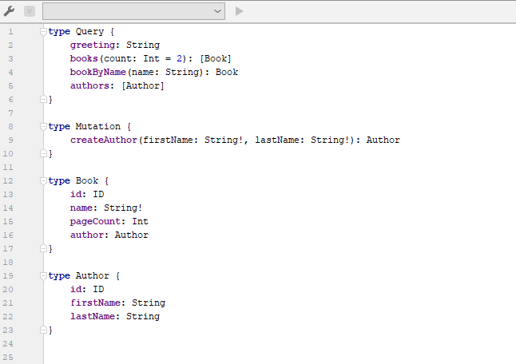

Schema Definition Language (SDL)
 The Schema Definition Language defines the schema of the API, and is the contract between the client and the server.
The Schema Definition Language defines the schema of the API, and is the contract between the client and the server.

Data Queries
scenario 1
scenario 2
scenario 3
Data Mutations
createAuthor()
getAuthors()